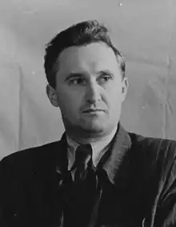
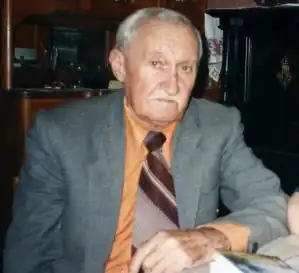

Коваленко Іван Юхимович – видатний український поет, дисидент, політв'язень радянських часів. Непересічна особистість, енциклопедист, талановитий педагог. Внутрішньо незалежний та безкомпромісний, не співпрацював із тоталітарним режимом, відверто висловлював свої погляди, за що піддавався цькуванню та позбавлявся права викладати. Громадянські вірші І.Коваленка широко розповсюджувались у самвидаві.
Народився 13 січня 1919 року в с.Лецьки, що на Переяславщині. Його батько за вміле хазяйнування зазнав репресій, мати все шукала кращої долі, а маленький Іван ріс фактичним сиротою при живих батьках.
Дивом вижив під час голодомору 1932-33 рр. Закінчив Переяславську 1-шу школу та Київський університет ім.Т.Г.Шевченка. Працював учителем іноземних мов у Чернігові та Боярці, що під Києвом. До університету з першого разу не вступив через туберкульоз легенів. З метою зміцнити здоров'я два роки працював у Києві на будівництві, опанував майже всі будівничі професії. Загартовувався, багато плавав. Одночасно вчився у 10 класі вечірньої школи, щоб отримати кращий атестат. Подолавши хворобу і отримавши атестат, котрий давав право вступу без екзаменів, у 1938 році вступив до Київського державного університету ім. Т. Г. Шевченка на романо-германський факультет. На курсі виділявся поміж інших як яскрава особистість — складав вірші, добре малював, грав майже на всіх струнних інструментах. У 1939 році одружився з однокурсницею Іриною Павлівною Пустосмєховою, родом з Чернігова, з української інтелігенції. Її мати — Ольга Миколаївна Пустосмєхова — багато років працювала і приятилювала з Михайлом Коцюбинським, була родичкою Миколи Вербицького-Антіоха, що був одним із співавторів слів українського національного гімну "Ще не вмерла Україна"; близько товаришувала з Миколою Вороним. Батько, Пустосмєхов Павло Пилипович, був репресований та розстріляний у 1937 р. Сім'я дружини мала великий вплив на становлення майбутнього поета. До війни подружжя Коваленків закінчило 3 курси університету. Роки Другої Світової війни Іван Коваленко з дружиною провели у Чернігові. Намагалися евакуюватися, але потрапили в Пирятинське оточення. Повернулися в Чернігів, де мало не померли з голоду. Рятувались випадковими заробітками. Іван малював ікони, які можна було виміняти у селах на продукти. Вів підпільну роботу серед полонених французів, що працювали в Чернігові. У 1943 році після звільнення Чернігова був призваний до лав армії, але медкомісія визнала його непридатним через хворобу серця та критичне виснаження. У тому ж році Коваленко був призначений директором єдиної вцілілої чернігівської школи № 4. Згодом працював разом з дружиною простим учителем, викладаючи іноземні мови та астрономію. У 1947 році з дворічним сином Олесем подружжя Коваленків перебралося до м. Боярки, що під Києвом. У Боярці працювали у школі № 1, де Іван Коваленко викладав астрономію, англійську, французьку та німецькі мови. Одночасно кінчали екстерном університет. Дипломи отримали у 1950 році. У 1957 році народилася донька Марія. Вели значну просвітницьку роботу: зібрали велику шкільну бібліотеку, організували самодіяльний театр, ставили п'єси, організовували екскурсії та походи, влаштовували літературні вечори. Користувалися великим авторитетом серед учнів та громадськості, і водночас піддавались цькуванню з боку партійної організації школи та районного комітету КПРС через перебування на окупованій території, але більшою мірою за непримиренність до всіляких неподобств у роботі школи. У 1955 за неповагу до відкритих партійних зборів Коваленка було звільнено з роботи. Впродовж 5 років його не допускали до педагогічної роботи і лише у 1960 році дозволили вчителювати у вечірній школі робітничої молоді, де він і пропрацював до 1972 року. У 1972 році заарештований під час репресій, яким було піддано українську творчу інтелігенцію. Карався в уральському таборі суворого режиму "Перм-35" разом із іншими відомими дисидентами-шістдесятниками. Іван Коваленко переступив поріг рідної хати 13 січня 1977 року, знов-таки на день свого народження. Зовсім хворий, два роки домагався запису в трудовій книжці про звільнення з роботи, щоб призначили пенсію (57 крб.) Підтримував зв'язки з колишніми політв'язнями. Був реабілітований 1991 року. Завдяки турботам сім'ї, здоров'я поета дещо покращилося, він продовжував складати вірші. Після 1991 р. в Незалежній Україні друкувався в періодиці, мали місце сюжети по радіо і телебаченню. У 1995 року учениця і друг сім'ї Коваленків Ольга Рожманова — дружина академіка Геннадія Мацуки — видала своїм коштом книжку віршів "Недокошений луг". У 1996 р. Служба безпеки України повернула долучені до справи матеріали і серед них деякі вірші поета. Завдяки цьому 1999 року до 80-річчя поета у видавництві "Освіта" вийшло повніше зібрання поезій "Джерело". У 2006 р. також на кошти О.Рожманової у видавництві "Логос" було видано практично повну збірку творів Івана Коваленка "Перлини". У 2009 — збірку вибраних поезій "Учитель". У 2012 вийшло видання, розраховане на освітян та учнів — "Порив до небес" (у скороченому виді перевидано — у 2020 р.). Помер 18 липня 2001 року. Похований у Боярці. Упродовж усього життя принципово не належав ні до яких угрупувань, партій чи спілок — ні радянських, ні сучасних.